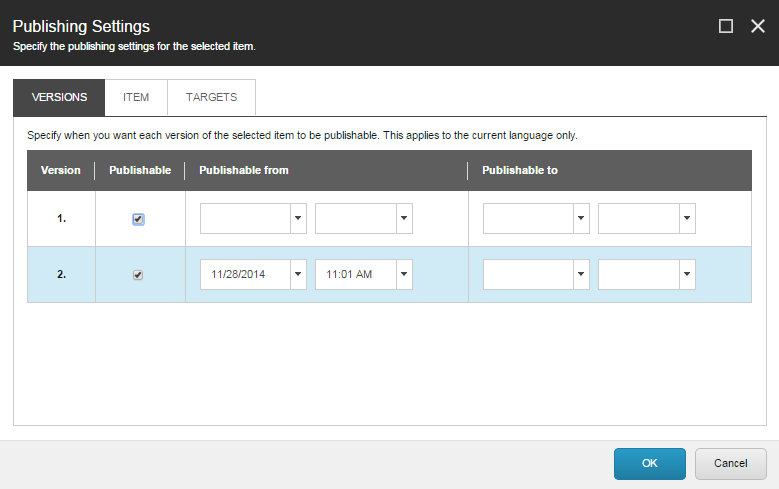
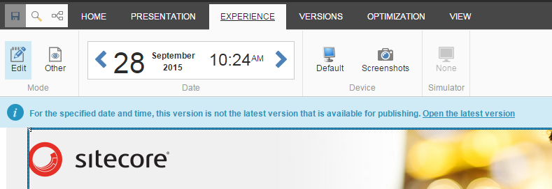

アイテムの公開制限を設定する¶
コンテンツ エディタとエクスペリエンス エディタでは、出版制限を使用してアイテムの出版を制限することができます。公開制限を使用すると、特定のアイテムまたはアイテムのバージョンを、特定の日付範囲内または無期限に公開または非公開にすることができます。このようにして、任意の時点で公開可能なアイテムやページを制御することができます。
例えば、サイト全体が常に最新の状態であることを確認するために定期的にサイト全体を公開するようにSitecoreを設定している場合、公開したくない項目に公開制限を設けることができます。これには、まだ作成中のアイテムや、特定のキャンペーンが展開されたときにのみ公開したい完成品などが含まれます。公開制限機能を使用すると、アイテムの公開時期を簡単に管理できるので、適切なアイテムのみが公開されます。
注釈
将来の日付からパブリッシュ可能な公開制限のあるページのバージョンでコンテンツ テストを開始した場合、テストは公開制限を上書きします。ページのバージョンは、公開制限に関係なく、テストの開始時に公開され、テストは直ちに有効になります。
アイテムの単一バージョンの公開制限を設定する¶
アイテムのバージョンに対してパブリッシングの制限を設定するには、次の手順に従います。
コンテンツ エディタまたはエクスペリエンス エディタで、出版制限を設定する項目またはページに移動します。アイテムの関連する言語とバージョンを選択していることを確認します。
[パブリッシング設定]ダイアログボックスを開くには
[コンテンツエディタ]で、[発行]タブの[制限]グループで、[変更]をクリックします。
{kind=link}
エクスペリエンス エディタの［ホーム］タブの［発行］グループで［設定］をクリックします。
{kind=link}
[パブリッシング設定] ダイアログ ボックスの [バージョン] タブには、現在の言語でのアイテムのバージョンが一覧表示されます。デフォルトでは、各バージョンは公開可能です。アイテムが公開できない場合は、ウェブサイト全体を公開しても、そのアイテムは公開されません。
{kind=link}
注釈
ワークフロー内にアイテムがある場合、「出版設定」ダイアログボックスで「出版可能」チェックボックスを選択していても、ワークフローの最終状態になるまでは、アイテムは出版できません。
特定のアイテムのバージョンを公開可能にするには、[公開可能] チェックボックスをオンにします。アイテムのバージョンを発行できないようにするには、[発行可能]チェックボックスをオフにします。
アイテムのバージョンが発行可能な期間を指定するには、[発行可能]チェックボックスを選択し、[発行元]フィールドと[発行先]フィールドに日付と時間を入力します。 開始日と終了日のみを指定するか、すべてのフィールドを空白のままにしておくこともできます。
公開制限の設定が完了したら、[OK] をクリックします。コンテンツ エディタでは、アイテムのコンテンツ領域に警告が表示され、このアイテムに制限が設定されていることを、自分または他のコンテンツ エディタに通知します。
{kind=link}
アイテムの公開制限を設定したら、ウェブサイトをプレビューして、すべてが正しく設定されていることを確認してください。ウェブサイトをプレビューすると、すべてのウェブページが今後の日付や異なる言語でどのように見えるかを確認することができます。
アイテムのすべてのバージョンの公開制限を設定する¶
アイテムのすべてのバージョンとすべての言語に対してパブリッシング制限を設定するには
[コンテンツ エディタ] または [エクスペリエンス エディタ] で、出版制限を設定する項目またはページに移動します。
パブリッシング設定］ダイアログボックスを開くには
{kind=link}
パブリッシング設定ダイアログボックスで、項目タブをクリックします。
{kind=link}
すべてのアイテムのバージョンを発行可能に指定するには、発行可能チェックボックスをオンにします。
すべてのアイテムのバージョンを発行できないように指定するには、[発行可能] チェックボックスをオフにします。
注釈
[発行可能] チェックボックスをオフにすると、[バージョン] タブに表示されているすべてのアイテムのバージョンに影響します。つまり、アイテムを発行できないように指定した場合、そのアイテムのバージョンを発行可能にすることはできません。公開すると、そのアイテムとそのすべてのバージョンがターゲット データベースから削除されます。
すべてのアイテムのバージョンが公開可能な期間を指定するには、[公開元] フィールドと [公開先] フィールドに日付と時刻を入力します。 開始日、終了日のみを指定するか、すべてのフィールドを空白のままにしておくこともできます。
重要
アイテムやアイテムのバージョンが公開可能な日付範囲を指定した場合、開始日にアイテムが公開され、終了日に再び削除されるという意味ではありません。代わりに、そのアイテムまたはウェブサイト全体を公開するときに、そのアイテムが公開可能であり、含まれていることを意味します。開始日にアイテムをウェブサイトに表示し、終了日に再び削除するには、両方の日にアイテムの公開ウィザードを実行する必要があります。
アイテムのすべてのバージョンを特定のパブリッシュ ターゲットにのみ公開するように制限するには、[ターゲット] タブで、関連するパブリッシュ ターゲットを選択します。これは、すべての言語のアイテムのすべてのバージョンに適用されます。 アイテムのパブリッシング ターゲットを 1 つ以上選択すると、発行時に、選択していないパブリッシング ターゲットからアイテムが削除されます。 アイテムのパブリッシング ターゲットを指定しない場合、アイテムは、発行ウィザードで選択した任意のパブリッシング ターゲットに発行できます。
{kind=link}
注釈
出版ターゲットのリストには、通常の出版ターゲットとプレビュー出版ターゲットの両方が含まれています。
公開制限の設定が完了したら、[OK] をクリックします。
コンテンツ エディタで、アイテムのコンテンツ タブに警告が表示され、このアイテムに制限が設定されていることを通知します。
エクスペリエンス エディタでは、エクスペリエンス タブの日付グループで指定した日付に、より新しい公開可能なバージョンがある場合に通知が表示されます。

{kind=link}
アイテムの公開制限を設定したら、ウェブサイトをプレビューして、すべてが正しく設定されていることを確認してください。ウェブサイトをプレビューすると、各ウェブページが特定の日付や異なる言語でどのように表示されるかを確認することができます。